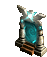

Объекты
Одноразовые источники ресурсов
 |
Морская бочка |
|---|---|
|
-20% шанс не получить ничего; -80% шанс получить 3-6 ртути, серы, кристаллов или драг. камней. | |
 |
Потерянный груз |
|
-25% шанс не получить ничего; -25% шанс получить 5 руды; -25% шанс получить 5 руды и 200 золота; -25% шанс получить 10 руды и 500 золота. | |
 |
Морской сундук |
|
-20% шанс не получить ничего; -70% шанс получить 1500 золота; -10% шанс получить 1500 золота и 1 случайный артефакт-сокровище. | |
 |
Склянка маны |
| +30-60 маны (часть маны, превышающая стандартный максимум для героя, дается в половинном объеме). |
Склады
Склады - новый тип объектов, который один раз в неделю при посещении приносит определенное количество ресурсов. |
Склад древесины |
|---|---|
| Приносит 10 единиц древесины раз в неделю. | |
 |
Склад руды |
| Приносит 10 единиц руды раз в неделю. | |
 |
Склад ртути |
| Приносит 6 единиц ртути раз в неделю. | |
 |
Склад серы |
| Приносит 6 единиц серы раз в неделю. | |
 |
Склад кристаллов |
| Приносит 6 кристаллов раз в неделю. | |
 |
Склад изумрудов |
| Приносит 6 изумрудов раз в неделю. |
Обучающие объекты
Водные


Наземные
 |
Святыня магической тайны |
|---|---|
| Обучает заклинанию 4-ого уровня. | |
 |
Колизей магов |
| Бесплатно дает +2 к силе магии или знаниям на выбор. |
Банки и консерватории
В игру было добавлено множество различных банков и консерваторий. В банках герой сражается с охраной и в награду получает ресурсы и артефакты, а в консерваториях герой получает в награду дополнительных существ.Банки


Консерватории


Прочие объекты


Вернуться в начало 